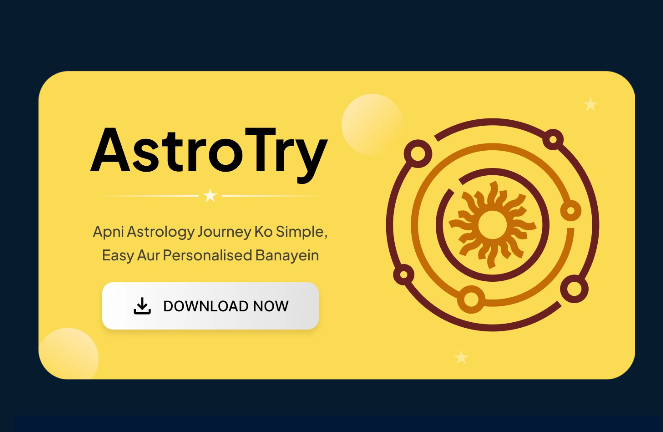

अपनी परामर्श सेवा
आगे की पढ़ाई और अनुभव के बाद, ऑनलाइन या प्रत्यक्ष व्यक्तिगत परामर्श की दिशा में बढ़ें।
वैदिक ज्योतिष · प्रारम्भिक सजीव पाठ्यक्रम
ज्योतिष को अपनी रुचि से आगे, एक कौशल बनाइए।
वेदांश वल्लभ के साथ ग्रह, राशि और भाव से शुरू कीजिए। 3 महीने में प्रारम्भिक कुंडली अध्ययन की ओर बढ़िए—सरल व्याख्या, सजीव कक्षाएँ और कुंडली अभ्यास के साथ।
नया बैच शुरू
पूरे 3 महीने की शुल्क · भुगतान Razorpay पर
12 हफ्तों का क्रमबद्ध पाठ्यक्रम
सजीव कक्षाएँ, साथ में अभ्यास
हर सप्ताह 2 कक्षाएँ × 2 घंटे
कक्षा अभ्यास और गृहकार्य का लक्ष्य
ज्योतिष पर एक खुली बातचीत
वेदांश वल्लभसंस्थापक, AstroVedansh · ज्योतिषी एवं अंकज्योतिषी
YouTube पर देखेंज्योतिष का क्षेत्र और सम्भावनाएँ
ज्योतिष में आज व्यक्तिगत परामर्श के साथ ऑनलाइन कॉल और संदेश का भी स्थान है। अच्छी समझ, संवाद और लोगों का भरोसा—इन्हीं पर अपना काम खड़ा होता है।
आगे की पढ़ाई और अनुभव के बाद, ऑनलाइन या प्रत्यक्ष व्यक्तिगत परामर्श की दिशा में बढ़ें।
योग्यता और मंच की चयन प्रक्रिया पूरी करके कॉल या संदेश द्वारा परामर्श के लिए आवेदन कर सकते हैं।
अपनी समझ से वीडियो और लेख बनाइए। विषय को सरल तरीके से समझाकर अपनी पहचान विकसित कीजिए।
अनुभव बढ़ने पर किसी विषय में विशेषज्ञता लें और कार्यशालाएँ या कक्षाएँ की दिशा में आगे बढ़ें।
यह पाठ्यक्रम पहला कदम है। व्यावसायिक परामर्श के लिए आगे का अध्ययन और मार्गदर्शन में अभ्यास ज़रूरी हैं। आय आपके कौशल, परामर्श लेने वालों और खर्च पर निर्भर है; नौकरी या आय की गारंटी नहीं है।
Astrotalk: ज्योतिषी पंजीकरण ↗ · AstroSage: कॉल या संदेश द्वारा परामर्श ↗
ये क्षेत्र के उदाहरण हैं; इस पाठ्यक्रम की साझेदारी या रोजगार उपलब्ध कराने का दावा नहीं।
कौन सीख सकता है?
पहले से ज्योतिष या संस्कृत आना ज़रूरी नहीं।
हर सप्ताह 4 घंटे सजीव कक्षा + अपनी अभ्यास का समय निकालिए।

मेरे बारे में
ज्योतिषी · अंकज्योतिषी · संस्थापक, AstroVedansh
मैं वेदांश वल्लभ, AstroVedansh का संस्थापक हूँ। मेरी कोशिश है कि आप किसी नियम को सिर्फ याद न करें—कुंडली में उसका उपयोग भी समझें।
“हम डर नहीं बेचते,आइए, देखें क्या सीखेंगे
स्पष्टता देते हैं।”
3 महीने में क्या सीखेंगे?
नवग्रह, 12 राशियाँ, भाव और भावेश।
ग्रहबल, दृष्टि, युति और ग्रह संबंध।
योग, दशा–गोचर का परिचय और जन्मकुंडली अध्ययन।
आपका अन्तिम व्यावहारिक कार्य: एक नई कुंडली की 2–3 पेज की प्रारम्भिक अध्ययन, कारण सहित।
पाराशरी आधार · बृहत् पराशर होरा शास्त्र और फलदीपिका के चुने हुए मूल विषय।
ग्रह, राशियाँ और भावों की शुरुआत
जन्मकुंडली / राशि कुंडली, लग्न, राशि और भाव का फर्क, अंश और उत्तर भारतीय कुंडली में ग्रह व भावेश पहचानना।
अभ्यास: 10 खाली कुंडलियाँ पर पहचान।
सूर्य से केतु तक: ग्रहों का स्वभाव, तत्व, गुण, कारकत्व और उनसे जुड़े जीवन के प्रमुख विषय.
अभ्यास: हर ग्रह की कारकत्व की सम्बन्ध निर्धारण और कुंडली अवलोकन.
मेष से मीन: तत्व, चर–स्थिर–द्विस्वभाव, राशि स्वामी और ग्रह पर राशि का प्रभाव।
अभ्यास: तत्व + स्वभाव + स्वामी की अभ्यास पत्र.
स्वभाव, धन, वाणी, परिवार, साहस, कौशल, माता और सुख से जुड़े भाव। भाव–भावेश–कारक को साथ पढ़ने की शुरुआत।
प्रगति जाँच: आधारभूत परीक्षा और 10 कुंडलियाँ पर अभ्यास।
इस महीने की समझकुंडली में ग्रह, राशि, भाव और भावेश पहचानना।
बाकी भाव, ग्रहबल और आपसी संबंध
शिक्षा, बुद्धि, संतान, प्रेम, सेवा, ऋण, विवाह, साझेदारी और परिवर्तन से जुड़े भाव।
अभ्यास: 8 कुंडलियाँ में भाव, स्वामी और कारक साथ देखना।
भाग्य, गुरु, कर्म, व्यवसाय, आय, खर्च और विदेश। किसी भाव का स्वामी दूसरे भाव में जाने पर अध्ययन कैसे बदलती है।
अभ्यास: सभी 12 भावेश की ग्रहस्थिति तालिका.
उच्च, नीच, स्वराशि, मूलत्रिकोण, मित्र–शत्रु राशि; अस्त, वक्री, वर्गोत्तम, अंश और दिशाबल का परिचय।
अभ्यास: 15 ग्रहस्थितियाँ की बल समझना, कारण सहित।
7वीं दृष्टि, मंगल–गुरु–शनि की विशेष दृष्टियाँ, युति, राशि परिवर्तन और राशिस्वामी संबंध।
प्रगति जाँच: ग्रह सम्बन्ध पर व्यावहारिक परीक्षा.
इस महीने की समझग्रह की स्थिति और संबंध देखकर प्रारम्भिक फल-विचार करना।
योग, दशा, गोचर और अन्तिम अभ्यास
केंद्र, त्रिकोण, त्रिक, उपचय, मारक; धर्म–अर्थ–काम–मोक्ष भाव। भावात् भावम्, कारकात् भावम् और राशिस्वामियों की शृंखला का सरल परिचय।
अभ्यास: भाव वर्गीकरण और भावात् भावम् के उदाहरण.
राजयोग, धनयोग, धर्म–कर्माधिपति, परिवर्तन, नीचभंग और विपरीत राजयोग। योग बनने और उसका फल मिलने का फर्क।
अभ्यास: 20 कुंडलियाँ में योग व संबंधित भाव–ग्रह पहचानना।
विंशोत्तरी महादशा–अंतर्दशा और दशानाथ के भाव। शनि, गुरु, राहु–केतु के प्रमुख गोचर का परिचय; जन्मकुंडली व चंद्र का सन्दर्भ.
अभ्यास: अपनी वर्तमान महादशा–अन्तर्दशा का प्रारम्भिक कार्यसंग्रह.
5 मार्गदर्शित कुंडलियाँ पर स्वभाव, शिक्षा, व्यवसाय, धन व सम्बन्धों की प्रवृत्तियाँ पढ़ने का अभ्यास। नई कुंडली का विश्लेषण और मौखिक परीक्षा और पुनरावृत्ति.
अन्तिम कार्य: एक नई जन्मकुंडली कुंडली का 2–3 पेज का प्रारम्भिक विश्लेषण.
इस महीने की समझएक जन्मकुंडली की प्रारम्भिक अध्ययन कारण सहित लिखना।

अध्ययन के साथ अभ्यास का साधन
पाठ्यक्रम के साथ 1 साल का AstroTry उपयोग निःशुल्क। ₹12,000 की मूल्य—कुंडली बनाकर कक्षा के साथ अभ्यास कीजिए।
Google Play पर ऐप देखेंआपके अगले 3 महीने
24 सजीव कक्षाएँ, कुंडली अभ्यास और सवाल पूछने का अवसर। एक तय क्रम में सीखिए, शिक्षक के मार्गदर्शन के साथ।
पाराशरी ज्योतिष का अध्ययन, पहली कुंडली से।
₹12,000 की मूल्य · कोई अतिरिक्त शुल्क नहीं
भुगतान Razorpay पर होगा।
नियम और नीतियाँ नीचे दिए गए हैं।
अध्ययन शुरू करने से पहले
शुरुआत, अभ्यास और आगे की पढ़ाई के बारे में।
हाँ। ग्रह, राशि और भाव से शुरू करेंगे। पहले से ज्योतिष या संस्कृत आना ज़रूरी नहीं।
बैच 15 नवंबर 2026 से शुरू होगा। हर सप्ताह 2 सजीव कक्षाएँ, हर कक्षा 2 घंटे की। कक्षाओं का समय भुगतान से पहले संस्थान से पुष्टि करें।
रिकॉर्ड की गई कक्षाएँ की उपलब्धता और उपयोग की अवधि भुगतान से पहले संस्थान से पुष्टि करें।
यह आधारभूत पाठ्यक्रम है। व्यावसायिक परामर्श के लिए उन्नत अध्ययन, मार्गदर्शन में अभ्यास और अनुभव बढ़ाना होगा।
₹10,000 में 3 महीने की कक्षाएँ, अध्ययन सामग्री और 1 साल का AstroTry उपयोग शामिल है। धनवापसी और शर्तें और गोपनीयता नीति नीचे दी हैं। जल्द उपलब्ध विशेष कक्षाएँ अलग हैं।
अंकज्योतिष का क्रमबद्ध अध्ययन
विशेष प्रवेश प्रस्तावजन्मतिथि की गणना, अंकों का गहरा अध्ययन और अंकज्योतिष सारणी से विश्लेषण सीखें। पारम्परिक फलित, उपाय और शोध तक क्रमबद्ध अध्ययन।
पाठ्यक्रम देखकर अपना अनुभव साझा करें। कोई प्रश्न हो, तो हमारी टीम से पूछें।
देखें · गणना करें · समझें · शोध करें
विशेष कक्षाओं का परिचय
3–4 घंटे की रिकॉर्ड की गई विशेष कक्षाएँ। अलग शुरू होंगी; इस पाठ्यक्रम की शुल्क में शामिल नहीं हैं।
विशेष कक्षा
रिकॉर्ड की गई कक्षा · 3–4 घंटे
विशेष कक्षा
रिकॉर्ड की गई कक्षा · 3–4 घंटे
विशेष कक्षा
रिकॉर्ड की गई कक्षा · 3–4 घंटे
विशेष कक्षा
रिकॉर्ड की गई कक्षा · 3–4 घंटे
विशेष कक्षा
रिकॉर्ड की गई कक्षा · 3–4 घंटे
विशेष कक्षा
रिकॉर्ड की गई कक्षा · 3–4 घंटे
विशेष कक्षा
रिकॉर्ड की गई कक्षा · 3–4 घंटे
हमारा वचन
हर विषय को क्रम से समझें, ताकि आगे की पढ़ाई का आधार पक्का हो।
सिर्फ याद करना नहीं—कुंडली के उदाहरणों से नियमों का उपयोग समझना।
ज्योतिष को संवेदनशीलता से सीखें। दावे से पहले तर्क और निष्कर्ष से पहले पूरा संदर्भ।